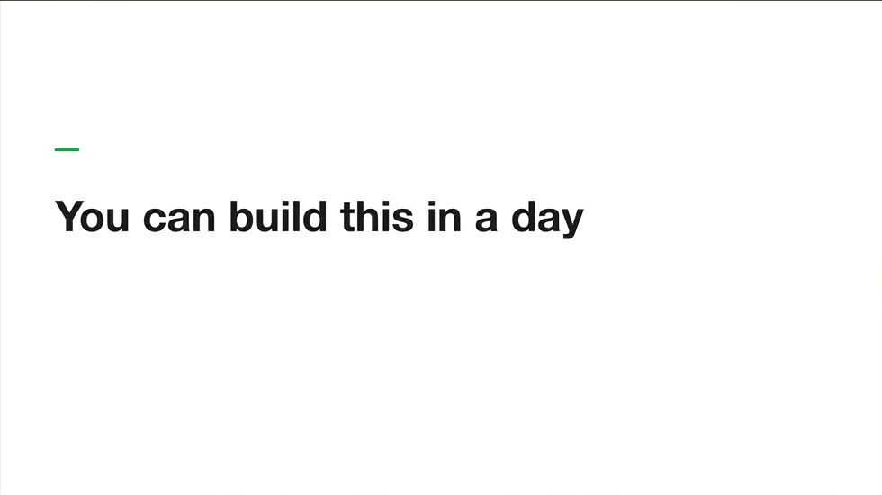
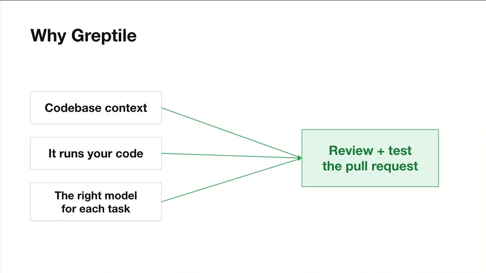
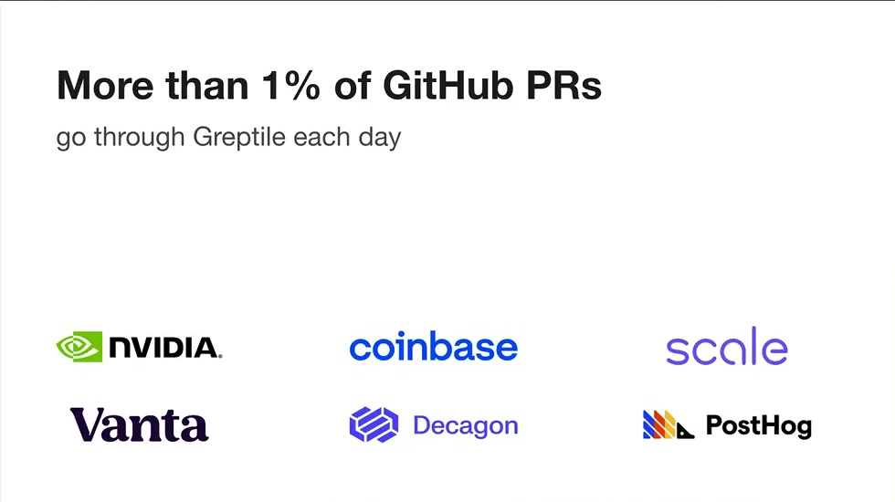
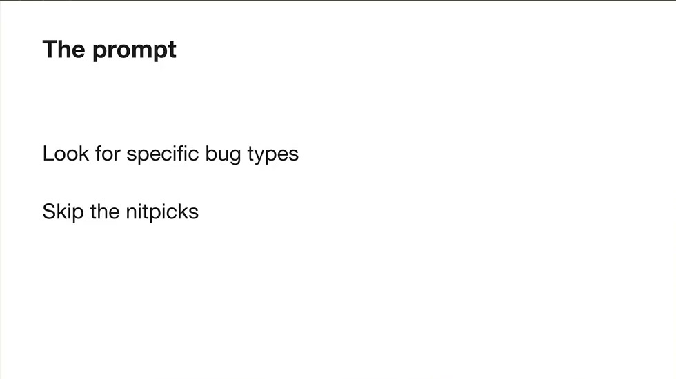
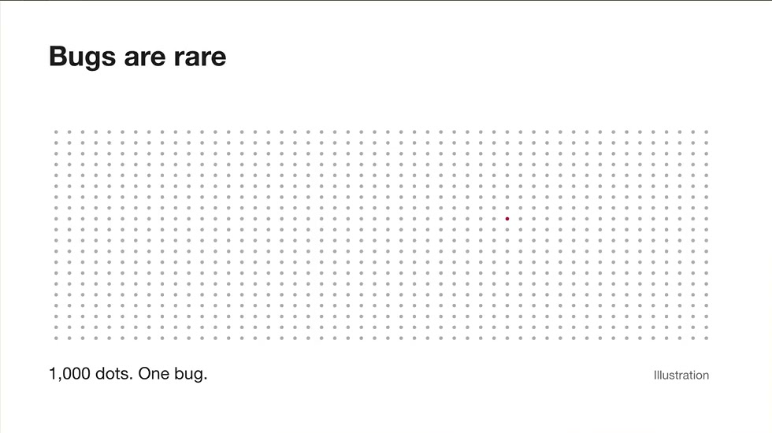
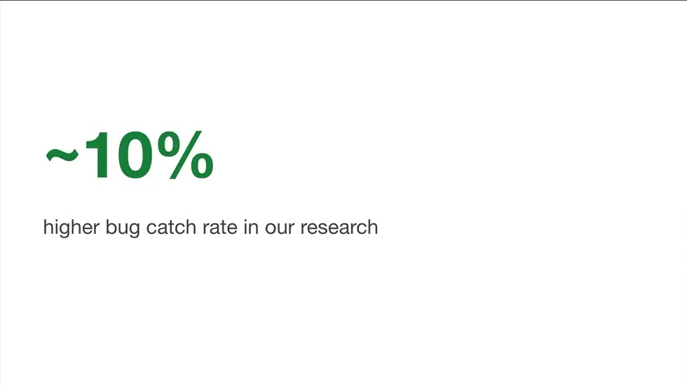
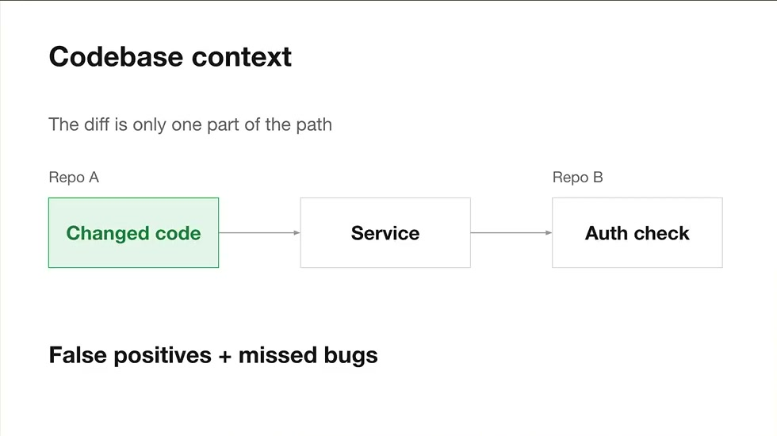
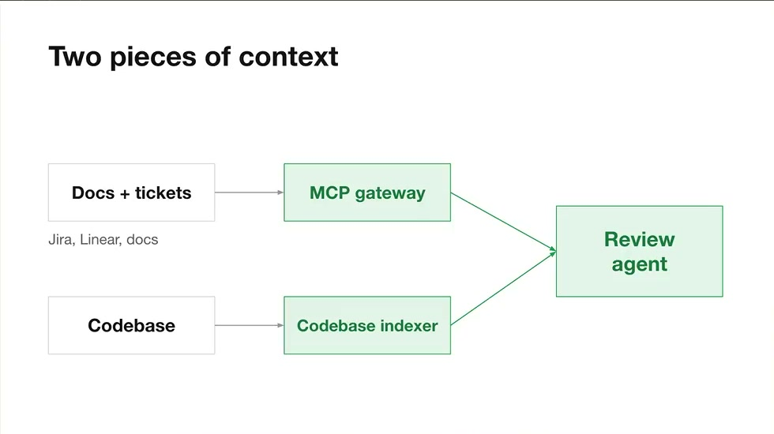
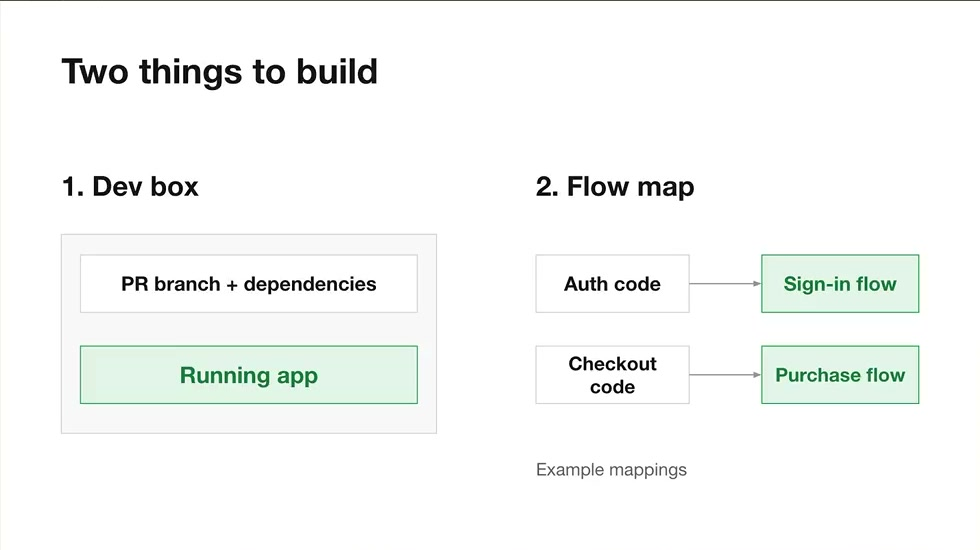
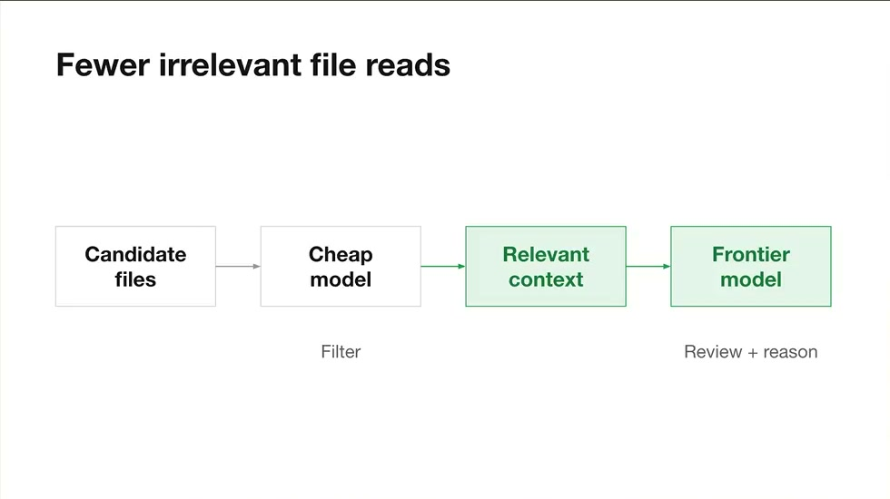

The version you can build in a day
Greptile sometimes meets a company whose needs are so specialized that it is better off building its own review agent, and when that happens they help for free. The talk is that advice.
Start with a sandbox, and put an agent in it. He recommends an open-source, model-independent harness as the base, for a reason that comes up later. Connect GitHub or GitLab so that a webhook sends the contents of each pull request. Give the agent a prompt that says to review it and send back feedback, and wire the comments back through the platform's API. He says many people think that is all it takes. His slide puts it at a day's work.



“The first thing that you should do is you should get yourself a sandbox.”00:02:19
- A sandbox, an agent, a webhook in, review comments out.
- Use a harness that is not tied to one model.
- This much works within a day.
Evidence: transcript 00:00:00
Then you run it
A pull request opens, and about five minutes later feedback arrives. Then the problems show up. His slide lists five.
It misses bugs, which is the one thing the system is for. Bugs are hard to find by nature; he quotes a post calling them fractal demons, because you never run out. It lacks context: it misunderstands how part of the codebase or a library works, and a company with thousands of repositories needs context across all of them. It is expensive. People who build this find themselves spending between three and twenty-five dollars a pull request.
It nitpicks. The comments are technically correct and trivial, which costs twice. A person has to sort the stylistic complaints from the catastrophic ones. And a coding agent that picks up review comments will try to address every one, which ends in painfully defensive code. Last, every time the agent is run again on the same pull request it finds new bugs, so the list never closes.
“bugs are fractal demons”00:02:19
- Missed bugs and missing context are the two failures of substance.
- Reviews cost dollars each, and run on every push.
- Nitpicks waste human attention and push coding agents toward defensive code.
Evidence: transcript 00:00:00 · watch what goes wrong
Fix one: a better prompt, and a way to know it is better
The cheapest improvement is the prompt. Theirs began as something like "review this PR" and a request for comments in the platform's format. Two changes matter. Look for specific types of bug: study past errors and incidents in your own codebase, catalog the kinds that recur, and have the prompt look for those. And tell it to skip the nitpicks.
The trouble is that a small change to the prompt makes a large change to the number of comments, and you cannot tell whether you have just stopped catching something. Catastrophic bugs are rare. He puts it at about one pull request in a thousand, so a worse version can run for a long time before anyone finds out.
So build a dataset. Collect the historical pull requests that caused outages and incidents, and run each version of the agent over them to see what it catches. That makes prompt changes something you can measure. It has limits: the kinds of bugs change over time, coverage is thin without a very large corpus, and as coding agents improve they will fail in new ways.


“can tell you about the presence of bugs, but unfortunately can't tell you about the absence of bugs”00:05:41
- Prompt for the bug types your own history shows, and against nitpicks.
- Serious bugs are about one in a thousand pull requests, so regressions hide.
- Replay past incident-causing pull requests to score each version.
Evidence: transcript 00:05:41
Fix two: the reviewer should not be the model that wrote the code
Their research found that different families of coding model produce different kinds of bug, which he attributes to how each was trained. A model reviewing its own family's code tends to fail in review the same way it failed in writing.
So invert it. If one model wrote the code, have another review it. This is why the harness needs to be independent of any one model. His slide gives the gain as about ten percent more bugs caught. He says that sounds small and is not, given what a missed bug can cost.
The hard part is knowing who the author was. Coding agents leave fingerprints, such as a naming pattern for branches or a co-author line in the commit. When those are missing it takes more digging, or internal telemetry on which tools engineers use.

“And so you want to invert the model.”00:08:42
- Model families make different mistakes and share blind spots within a family.
- Review with a different model from the one that wrote the code.
- Detect the author from branch names, commit trailers or telemetry.
Evidence: transcript 00:05:41
Fix three: give it a map of the codebase and the intent
Gupta's company started in code search, and he does not think context is solved. Searching the codebase with grep is imprecise and expensive: an agent reads files in large quantities, and most of the tokens in a coding agent's trace go on that. His slide shows why it matters for review. The diff is one part of a path that may run through another service and an authorization check in a different repository, and a reviewer that cannot see the path produces both false alarms and misses.
Bugs are not the only failure. Code can be correct and still not do what the author wanted, especially when the instruction was a sentence or two typed into a chat. The two sources that help most are the documentation and the tickets, alongside an index of the codebase. People underestimate how much unwritten knowledge helps them write good code, and an agent without it seems not to know what is going on.
Greptile's answer is a living wiki built from periodic crawls of the codebase, production telemetry, and the roadmap from documents and tickets. It supplies context and also makes search cheaper, because the agent knows which files it needs.


“This wiki is essentially a sort of world model of how your company works.”00:10:45
- A diff is not enough; the bug may be in how it meets another repository.
- Correct code can still miss the intent, so the agent needs tickets and docs.
- A maintained wiki of the system gives context and cuts wasted file reads.
Evidence: transcript 00:05:41, 00:10:45
Fix four: run the code
Some bugs cannot be read off a diff. A set of React changes can look unimportant and still break something on a phone. So the agent runs the application. Greptile builds configurable sandboxes with the full set of dependencies, works with each customer to bring their stack up inside one, and has a computer-use model click through it. He says computer use has improved enough that, for the first time, he considers end-to-end QA nearly solved.
Two things have to exist first. One is a build script simple enough for the agent to start the stack, which is easy if you already have good development boxes and one of the harder parts if you do not. The other is a map from areas of code to the user flows that exercise them, so the agent knows what to test when a file changes.

“this button technically appears, but it's actually hidden on iPhones.”00:14:04
- Some defects only appear when the app is running.
- A browser agent in a full sandbox clicks through the affected flows.
- You need a reproducible dev box and a map from code to user flows.
Evidence: transcript 00:10:45
Fix five: the frontier model only where it is needed
After all that the cost is still high; his slide says two to twenty dollars in tokens per review, on every push. The fix is to use cheaper models for most of the work. Greptile uses frontier models for about a fifth of it, the most critical steps. The slide's example gives finding context to a small model, testing user flows to a browser agent, and analyzing bugs to a frontier model. In practice they have about twenty subtasks, each with its own model, and a small research team that keeps revising the choices.
This depends on the dataset from the first fix. Without it you can swap in smaller models, feel pleased with the saving, and not learn that you are catching fewer bugs until one gets through. The same idea handles excess file reading: a cheap model filters the candidate context, and only what is relevant reaches the expensive one.

“You only find out when it misses something, then causes an error.”00:15:45
- A full review costs dollars per run until models are assigned per subtask.
- Frontier models do about a fifth of the work.
- Without a test set, a cheaper model's misses stay invisible.
Evidence: transcript 00:10:45